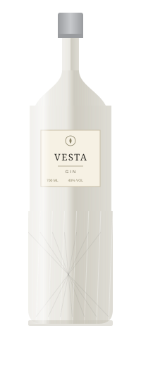
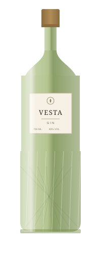
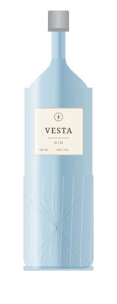
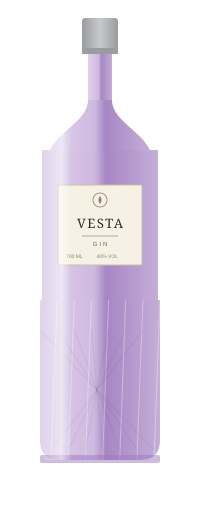
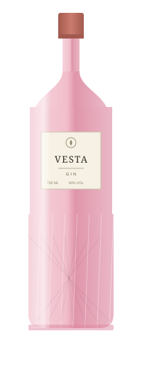
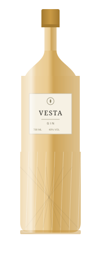

VESTA begins not in the still, but in the soil. We hand-select juniper, citrus peel, rosemary and lavender from Mediterranean hillsides, choosing each botanical for its character rather than its yield. Every batch is distilled slowly, in small quantities, allowing time — not shortcuts — to shape the final taste.
We believe true luxury isn't loud. It's found in patience, in balance, and in a gin that speaks for itself, one quiet pour at a time.

Six expressions, one philosophy. Each bottle is distilled slowly from hand-selected botanicals, offering a distinct character — from silken clarity to bold, earthy warmth.




